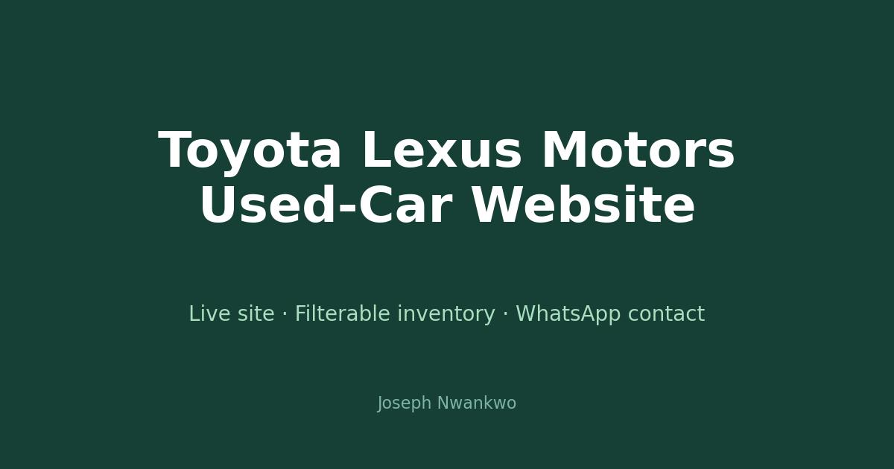

At a glance: HTML · CSS · JavaScript (vanilla) · GitHub Pages + Actions · features: inventory filtering, car detail views, WhatsApp/phone/email contact · live at chiteste4eva.github.io/ToyotaLexusMotors.
The business need.
A used-car seller lives or dies on inquiries. Listings scattered across chat apps do not build trust; a real website with real inventory does — and every car needs a one-tap path to contact the seller.
What was built.
Filterable inventory (brand, model, year, price, mileage, transmission, fuel, drivetrain, condition, location), detailed car views with photos and summaries, and contact baked into every listing — WhatsApp, phone, and email. Updating stock is simple: edit the cars array in script.js, push, and the site redeploys via GitHub Actions.
The best small-business website is one the owner can actually update. Inventory lives in one JavaScript array — no CMS, no database, no excuses.
What is next.
Sold/available status flags, a comparison view, and inquiry tracking so the seller knows which cars get the most attention.